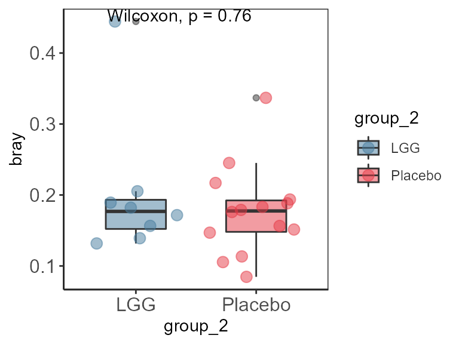
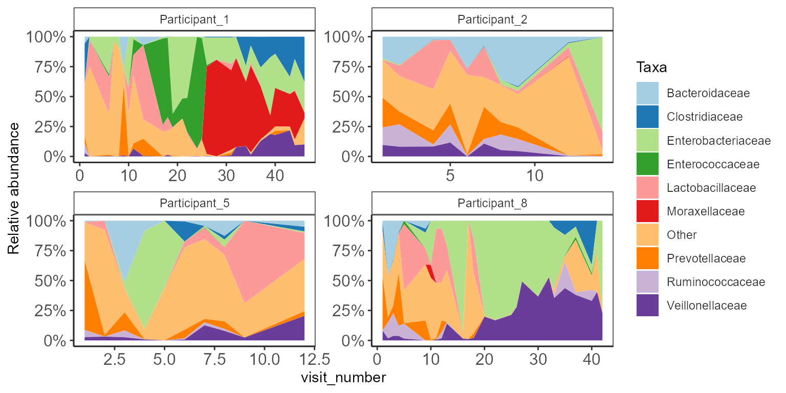
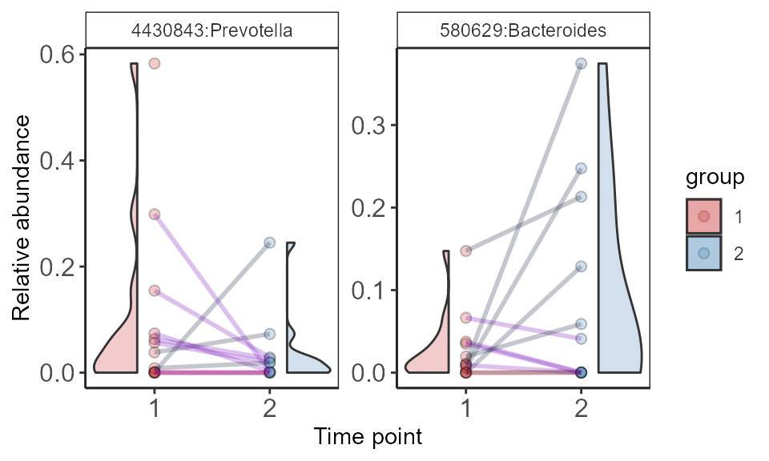
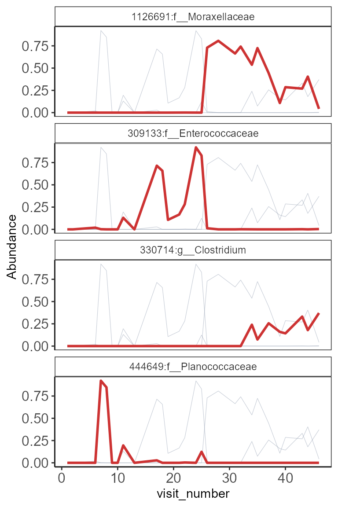
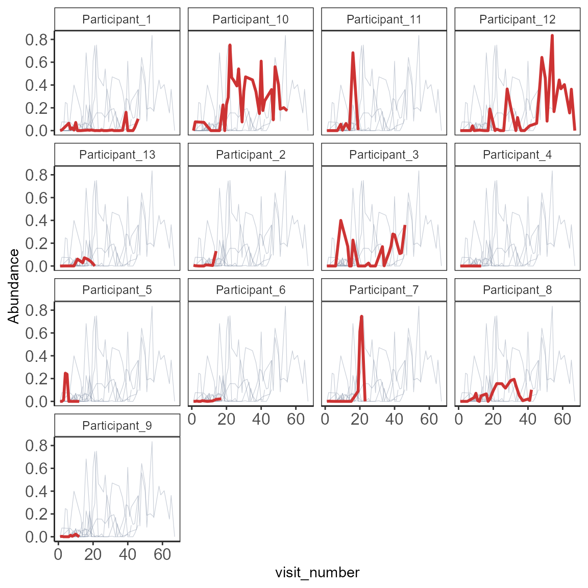

vignettes/microbiomeutilities_ts.Rmd
microbiomeutilities_ts.RmdLongitudinal data presents challenges for visualization.
See Grembi, J.A., Nguyen, L.H., Haggerty, T.D. et al. Gut microbiota plasticity is correlated with sustained weight loss on a low-carb or low-fat dietary intervention. Sci Rep 10, 1405 (2020).
Data from microbiome package is used here for
example.
library(microbiome)
library(microbiomeutilities)
library(dplyr)
library(ggpubr)
data(peerj32)
pseq <- peerj32$phyloseq
pseq.rel <- microbiome::transform(pseq, "compositional")
pl <- plasticity(pseq.rel, dist.method = "bray", participant.col="subject")
head(pl)
#> S1 S2 bray time_1 sex_1 sample_1 group_1 time_2 sex_2
#> 1 sample-2 sample-1 0.2451330 2 female sample-2 Placebo 1 female
#> 2 sample-4 sample-3 0.1563982 2 female sample-4 Placebo 1 female
#> 3 sample-6 sample-5 0.1892079 2 female sample-6 LGG 1 female
#> 4 sample-8 sample-7 0.1760096 2 male sample-8 Placebo 1 male
#> 5 sample-10 sample-9 0.1936717 2 female sample-10 Placebo 1 female
#> 6 sample-12 sample-11 0.1716045 2 female sample-12 LGG 1 female
#> sample_2 group_2 subject
#> 1 sample-1 Placebo S1
#> 2 sample-3 Placebo S2
#> 3 sample-5 LGG S3
#> 4 sample-7 Placebo S4
#> 5 sample-9 Placebo S5
#> 6 sample-11 LGG S6Alternatively, using correlation methods for plasticity,
one can check for similarity between technical replicates (2X sequenced
same sample) for quality check.
ggplot(pl, aes(group_2,bray)) +
geom_boxplot(aes(fill=group_2),
alpha=0.5,
na.rm = TRUE,
width=0.5) +
geom_jitter(aes(color=group_2),
alpha=0.5,
size=3,
na.rm = TRUE) +
scale_fill_manual(values = c("#457b9d", "#e63946"))+
scale_color_manual(values = c("#457b9d", "#e63946"))+
stat_compare_means() +
theme_biome_utils()
Area plots can be used to visualize changes in abundances in
individual participants, or bioreactors sampled over time.
Here, we use a randomly chosen small subset of data from HMP2data.
library(microbiomeutilities)
library(RColorBrewer)
data("hmp2")
ps <- hmp2
ps.rel <- microbiome::transform(ps, "compositional")
# chose specific participants to plot data.
pts <- c("Participant_1","Participant_2",
"Participant_8","Participant_5")
#pts <- "Participant_1"
ps.rel <- subset_samples(ps.rel, subject_id %in% pts)
p <- plot_area(ps.rel, xvar="visit_number",
level = "Family",
facet.by = "subject_id",
abund.thres = 0.1,
prev.thres=0.1,
fill.colors=brewer.pal(12,"Paired"),
ncol=2,
nrow=2)
p + ylab("Relative abundance") +
scale_y_continuous(labels = scales::percent)
We use a subset of HMP2 data
library(microbiome)
library(microbiomeutilities)
#library(gghalves)
library(tidyr)
data("hmp2")
ps <- hmp2
# pick visit 1 and 2
ps.sub <- subset_samples(ps, visit_number %in% c(1,2))
ps.sub <- prune_taxa(taxa_sums(ps.sub)>0, ps.sub)
ps.rel <- microbiome::transform(ps.sub, "compositional")
ps.rel.f <- format_to_besthit(ps.rel)
#top_taxa(ps.rel.f, 5)
# Check how many have both time points
table(meta(ps.rel.f)$visit_number)
#>
#> 1 2
#> 13 11
#table(meta(ps.rel.f)$visit_number, meta(ps.rel.f)$subject_id)
# there are two Participant_3 and Participant_11 with no time point2 sample
select.taxa <- c("4430843:g__Prevotella", "580629:g__Bacteroides")
group.colors = c("brown3", "steelblue", "grey70")
p <- plot_paired_abundances (ps.rel.f,
select.taxa=select.taxa,
group="visit_number",
group.colors=group.colors,
dot.opacity = 0.25,
dot.size= 2,
add.violin = TRUE,
line = "subject_id",
line.down = "#7209b7",
line.stable = "red",
line.up = "#14213d",
line.na.value = "red",
line.guide = "none",
line.opacity = 0.25,
line.size = 1)
print(p + xlab("Time point") + ylab("Relative abundance"))
The lines are colored according to their change in abundance from time 1 to time 2.
One participant many taxa
Reference for visualization and original code Data to
Viz.com
The ordering of panel on top of each other is better for comparisons. However, practical consideration can be made on number of columns and rows to distribute the panels.
library(microbiomeutilities)
data("hmp2")
pseq <- hmp2 # Ren
pseq.rel <- microbiome::transform(pseq, "compositional")
pseq.relF <- format_to_besthit(pseq.rel)
# Choose one participant
phdf.s <- subset_samples(pseq.relF, subject_id==
"Participant_1")
# Choose top 12 taxa to visualize
ntax <- top_taxa(phdf.s, 4)
phdf.s <- prune_taxa(ntax, phdf.s)
plot_spaghetti(phdf.s, plot.var= "by_taxa",
select.taxa=ntax,
xvar="visit_number",
line.bg.color="#8d99ae",
focus.color="brown3",
focus.line.size = 1,
ncol=1,
nrow=4,
line.size=0.2)
One taxa many participants
pseq.relF <- format_to_besthit(pseq.rel)
ntax2 <- core_members(pseq.relF, 0.001, 0.5)
# chose first for example
ntax2 # only
#> [1] "581782:f__Enterobacteriaceae"
# check how many participants are there in "subject_id"
length(unique(meta(pseq.relF)$subject_id))
#> [1] 13
# There are 13 participants. Choose ncol and nrow accordingly
plot_spaghetti(pseq.relF, plot.var= "by_sample",
select.taxa=ntax2,
group= "subject_id",
xvar="visit_number",
line.bg.color="#8d99ae",
focus.color="brown3",
focus.line.size = 1,
ncol=4,
nrow=6,
line.size=0.2)
This package is part of the microbiomeverse tools.
See also microbiome
R/BioC package
Contributions are welcome:
Issue
Tracker
Pull
requests
Star us on the
Github page
sessionInfo()
#> R version 4.2.1 (2022-06-23 ucrt)
#> Platform: x86_64-w64-mingw32/x64 (64-bit)
#> Running under: Windows 10 x64 (build 19044)
#>
#> Matrix products: default
#>
#> locale:
#> [1] LC_COLLATE=English_United States.utf8
#> [2] LC_CTYPE=English_United States.utf8
#> [3] LC_MONETARY=English_United States.utf8
#> [4] LC_NUMERIC=C
#> [5] LC_TIME=English_United States.utf8
#>
#> attached base packages:
#> [1] stats graphics grDevices utils datasets methods base
#>
#> other attached packages:
#> [1] tidyr_1.2.0 RColorBrewer_1.1-3
#> [3] ggpubr_0.4.0 microbiomeutilities_1.00.16
#> [5] dplyr_1.0.9 microbiome_1.18.0
#> [7] ggplot2_3.3.6 phyloseq_1.40.0
#>
#> loaded via a namespace (and not attached):
#> [1] nlme_3.1-157 bitops_1.0-7 fs_1.5.2
#> [4] gghalves_0.1.3 rprojroot_2.0.3 GenomeInfoDb_1.32.2
#> [7] backports_1.4.1 tools_4.2.1 bslib_0.4.0
#> [10] utf8_1.2.2 R6_2.5.1 vegan_2.6-2
#> [13] DBI_1.1.3 BiocGenerics_0.42.0 mgcv_1.8-40
#> [16] colorspace_2.0-3 permute_0.9-7 rhdf5filters_1.8.0
#> [19] ade4_1.7-19 withr_2.5.0 tidyselect_1.1.2
#> [22] compiler_4.2.1 textshaping_0.3.6 cli_3.3.0
#> [25] Biobase_2.56.0 desc_1.4.2 labeling_0.4.2
#> [28] sass_0.4.2 scales_1.2.1 pkgdown_2.0.6
#> [31] systemfonts_1.0.4 stringr_1.4.1 digest_0.6.29
#> [34] rmarkdown_2.16 XVector_0.36.0 pkgconfig_2.0.3
#> [37] htmltools_0.5.3 highr_0.9 fastmap_1.1.0
#> [40] rlang_1.0.5 rstudioapi_0.14 farver_2.1.1
#> [43] jquerylib_0.1.4 generics_0.1.3 jsonlite_1.8.0
#> [46] car_3.1-0 RCurl_1.98-1.6 magrittr_2.0.3
#> [49] GenomeInfoDbData_1.2.8 biomformat_1.24.0 Matrix_1.5-1
#> [52] Rcpp_1.0.8.3 munsell_0.5.0 S4Vectors_0.34.0
#> [55] Rhdf5lib_1.18.2 fansi_1.0.3 abind_1.4-5
#> [58] ape_5.6-2 lifecycle_1.0.2 stringi_1.7.6
#> [61] yaml_2.3.5 carData_3.0-5 MASS_7.3-57
#> [64] zlibbioc_1.42.0 rhdf5_2.40.0 Rtsne_0.16
#> [67] plyr_1.8.7 grid_4.2.1 ggrepel_0.9.1
#> [70] parallel_4.2.1 crayon_1.5.1 lattice_0.20-45
#> [73] Biostrings_2.64.0 splines_4.2.1 multtest_2.52.0
#> [76] knitr_1.40 pillar_1.8.1 igraph_1.3.1
#> [79] ggsignif_0.6.3 reshape2_1.4.4 codetools_0.2-18
#> [82] stats4_4.2.1 glue_1.6.2 evaluate_0.16
#> [85] data.table_1.14.2 vctrs_0.4.1 foreach_1.5.2
#> [88] gtable_0.3.1 purrr_0.3.4 assertthat_0.2.1
#> [91] cachem_1.0.6 xfun_0.31 broom_1.0.1
#> [94] rstatix_0.7.0 ragg_1.2.2 survival_3.3-1
#> [97] pheatmap_1.0.12 tibble_3.1.7 iterators_1.0.14
#> [100] memoise_2.0.1 IRanges_2.30.0 cluster_2.1.3
#> [103] ellipsis_0.3.2